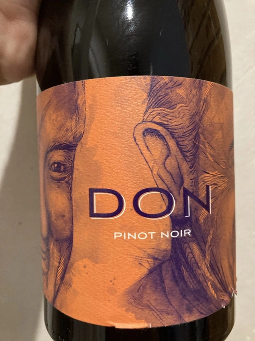

- Type
- Red Still, Dry
- Producer
- Alex Craighead
- Vintage
- 2018
- Location
- New Zealand, Nelson
- Grapes
- Pinot Noir
- Alcohol
- 12
- Sugar
- 0.1
- Price
- 745 UAH
- Cellar
- N/A
Producer
Kindeli wines are the product of Alex Craighead and Josefina Venturino. Alex, born in Australia and raised in New Zealand, studied wine and soon after began to travel the world to gain experience from other winemakers in various regions. That’s how he met Josefina, a landscape architect from Argentina. Eventually, they moved to New Zealand.
From day zero, they were experimenting with low intervention winemaking. In 2014 they released their first wines in Martinborough. In 2016 they moved to Nelson, where they bought an existing organic winery and vineyard. In other words, they moved from the southern part of the Northern Island to the northern part of the Southern Island. Are you confused? You shouldn’t be.
On 4.5 hectares of clay soils in Upper Moutere, Alex and Josefina cultivate 14 various varieties. In addition, they lease another three vineyards totalling another 9.5 hectares.
Ratings
2020-10-28 - 4.50
Some time ago I tasted Brutal by Alex Craighead and I wasn’t happy about this acquaintance. Typically flawed low intervention wine. But then I though that it’s a good idea to give a chance to his Pinot Noir. So here I am reevaluating my life choices that led me to this moment. Pricey and faulty. Instant noodles with spices, sour cherry and cucumber pickled in the acetone. VA is horrible here and leaks to the taste. Thanks, I’ll pass.